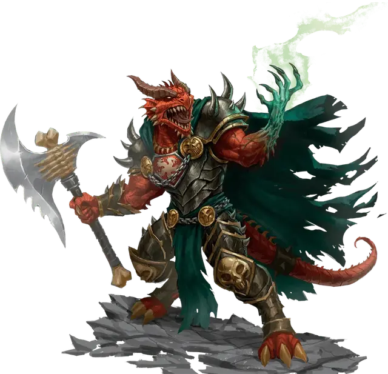

Архан Жестокий
Arkhan the Cruel
Средний Гуманоид (Драконорожденый), законно-злой, именной НИП

Класс Доспеха 23 (обсидианово-кремневые латы дракона, щит)
Хиты 221 (26к8 + 104)
Скорость 40 футов
| мод | спас | ||
|---|---|---|---|
| СИЛ | 20 | +5 | +5 |
| ЛОВ | 12 | +1 | +1 |
| ТЕЛ | 18 | +4 | +4 |
| мод | спас | ||
|---|---|---|---|
| ИНТ | 10 | +0 | +0 |
| МДР | 10 | +0 | +5 |
| ХАР | 18 | +4 | +9 |
Навыки Атлетика +10, Запугивание +9, Обман +9
Сопротивление урону огонь, яд; дробящий, колющий, рубящий от немагических атак
Иммунитет к состояниям испуг
Чувства тёмное зрение 60 футов (может видеть невидимых существ в этом радиусе ), пассивное Восприятие 10
Языки Общий, Драконий
Опасность 16 (15000 опыта)
Бонус мастерства +5
Особенности
Особое снаряжение. Архан владеет Храмовым пожирателем [Fane-Eater] и облачён в обсидианово-кремневые латы дракона [obsidian flint dragon plate]. Доспех даёт Архану преимущество на проверки характеристик и спасброски, совершаемые для того, чтобы избежать или окончить состояние захвата на нём.
Аура Ненависти. Пока Архан не выведен из строя, он и все исчадия и нежить в радиусе 30 футов от него дополнительно наносят 4 урона каждый раз, когда они попадают рукопашной атакой оружием (уже учтено в атаках Архана). Этот дополнительный урон того же типа, что и тип урона оружия.
Рука Векны. Рука Векны имеет 8 зарядов и восстанавливает 1к4 + 4 израсходованных заряда ежедневно на рассвете. Архан может накладывать следующие заклинания с помощью руки, расходуя указанное количество зарядов (Сл спасброска 18): перст смерти [finger of death] (5 зарядов), усыпление [sleep] (1 заряд), замедление [slow] (2 заряда) и телепортация [teleport] (3 заряда).
Врождённое колдовство. Базовой характеристикой Архана является Харизма (Сл спасброска от заклинания 17). Он может накладывать следующие заклинания, не нуждаясь в материальных компонентах:
• 3/день каждое: восставший труп [animate dead], клеймящая кара [branding smite] (как заклинание 4-го уровня), возрождение [revivify]
• 1/день каждое: обет [geas], оживление [raise dead]
Действия
Мультиатака. Архан совершает три атаки оружием.
Храмовый пожиратель. Рукопашная атака оружием: +13 к попаданию, досягаемость 5 футов, одна цель. Попадание: 16 (1к8 + 12) рубящего урона или 17 (1к10 + 12) если используется двумя руками, плюс 9 (2к8) урона холодом. Если целью является существо, и Архан выбрасывает "20" на броске атаки, существо дополнительно получает 9 (2к8) урона некротической энергией, а Архан восстанавливает количество хитов, равное нанесённому урону некротической энергией.
Метательное копье. Рукопашная или дальнобойная атака оружием: +10 к попаданию, досягаемость 5 футов или дистанция 30/120 футов, одна цель. Попадание: 8 (1к6+5) колющего урона, плюс 4 колющего урона и 9 (2к8) урона холодом если копьё используется для рукопашной атаки оружием.
Описание
Архан Жестокий - злой драконорожденный, рыцарь Тиамат. Архан считает, что с помощью руки Векны [eye and hand of Vecna] он найдёт способ освободить Тиамат из заточения в Девяти Преисподних, но только если рука не убьет его первой. Рука медленно отравляет плоть Архана, и разлагает его тело с одной стороны. Чтобы предотвратить этот процесс, Архану необходимо использовать руку Векны [eye and hand of Vecna] чтобы вырвать жизнь у существ с добрыми мировоззрением. Если персонажи попытаются заключить сделку с Арханом за флакон крови Тиамат или помощь в общении с самой королевой драконов, то он потребует принести в жертву с добрым мировоззреним в обмен на требуемое.
Лулу [lulu] — идеальный кандидат, как и единорог Цвет Луны (см. «Демоножарка», стр. 106). Но принести Архану такую жертву — злое деяние.
В бою Архан использует заклинание клеймящая кара [branding smite], чтобы наделять атаки своего оружия сияющей мощью Тиамат. Если бой обернётся не в его пользу, он использует способность руки Векны к телепортации [teleport], чтобы вернуться к себе в башню, прихватив как можно больше союзников. Если кто-то из его товарищей падёт в бою, Архан использует возрождение [revivify] и оживление [raise dead], чтобы воскресить их как можно скорее.
Если Архан поймёт, что противник слишком силён, он прикажет абишаям атаковать. Архан также может бонусным действием вызвать химеру Асоджано, живущую в глубине колоссального драконьего черепа. Это злое чудовище служит Тиамат и считает Архана другом и союзником.